Lecture 8
Graph Theory & Networks
From Bridges to Transformers
The Mathematics of Connections — 1736 to Today
Welcome. Today we trace 300 years of one idea: that the connections between
things matter more than the things themselves. We will start in 1736 with a
puzzle about bridges, and end with the AI models you interact with every day.
The Biggest Breakthrough in AI History
ChatGPT. Claude. Gemini. — You use them every day.
Attention = Complete Graph
Every word in a sentence connects to every other word. That is a graph — and it is the core idea behind every LLM.
Transformers = Graph Networks
The 2017 “Attention Is All You Need” paper built a neural network that is a graph processor. It changed everything.
Knowledge Graphs = AI Memory
When AI retrieves facts, it searches a knowledge graph — billions of nodes and edges encoding human knowledge.
Graph theory is the mathematics of the AI revolution.
Let me start with something you already know: ChatGPT, Claude, Gemini -- the
AI tools you probably use for homework, coding, or just chatting. These are
Large Language Models, and they represent the biggest breakthrough in AI
history. Here is the secret nobody tells you: they run on graph theory.
The core mechanism is called "attention." When an LLM reads your sentence, it
builds a complete graph -- every word is a node, and every word connects to
every other word with a weighted edge. The model learns which connections
matter most. That IS graph theory.
The transformer architecture from Google's 2017 paper "Attention Is All You
Need" is literally a graph neural network -- it processes information by
passing messages along edges of a graph, exactly like the algorithms we will
study today.
And when people talk about AI having "knowledge" -- that knowledge is stored
in massive knowledge graphs with billions of entities connected by
relationships. When ChatGPT retrieves a fact, it is traversing a graph.
So when you learn graph theory today, you are learning the mathematics that
powers the most transformative technology of your lifetime. Let us begin.
Watch: How LLMs Think
This 3-minute clip from 3Blue1Brown shows how LLMs predict the next token.
Watch how the probability distribution shifts as each word is processed —
this is the graph of connections between words that we will formalize today.
Can you cross all seven bridges exactly once?
This question invented an entire branch of mathematics.
Königsberg (now Kaliningrad), Prussia
In 1736, the citizens of Konigsberg had a puzzle. Their city was built on
a river with two islands, connected by seven bridges. On a Sunday stroll,
could you cross every single bridge exactly once and return home? Nobody
could manage it. But nobody could prove it was impossible—until a
mathematician named Euler stepped in.
Watch: The Bridge Problem
This TED-Ed animation tells the full story of Euler and the Konigsberg bridges.
It covers exactly what we just introduced — let it run fully (4 minutes 19 seconds).
When it ends, we will formalize Euler's insight with the actual graph abstraction.
Konigsberg, 1736
Origin
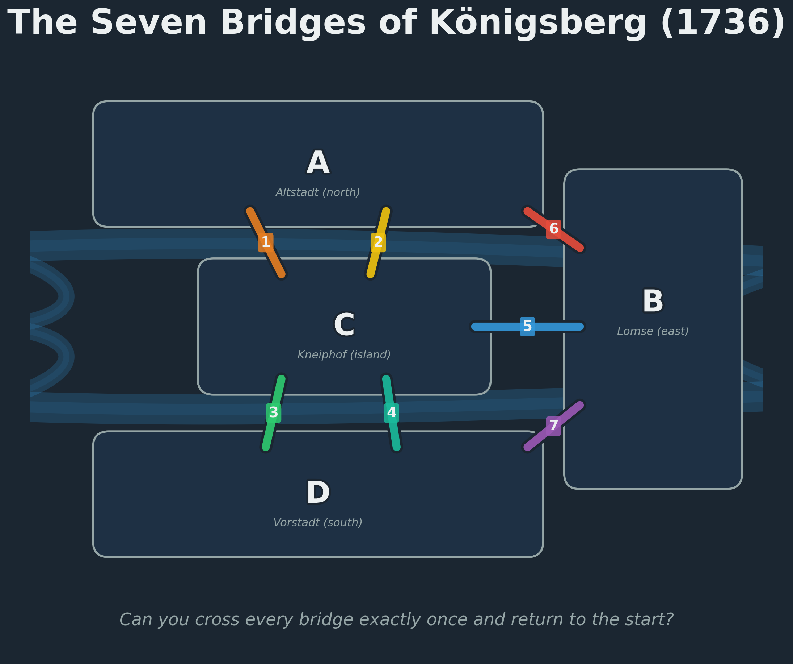
Konigsberg (now Kaliningrad, Russia), 1736
Four landmasses connected by seven bridges over the River Pregel. Two large
islands sit in the middle of the river; the north and south banks form the
other two landmasses. Citizens tried every possible route, but nobody could
cross all seven bridges without retracing their steps. This is the map that
started it all.
Euler's Insight
The graph
"The shape doesn't matter. Only the connections do."
Euler's genius was this abstraction. He stripped away every physical detail
— the river, the streets, the buildings — and kept only what
mattered: the landmasses became points, and the bridges became lines
connecting them. This was the birth of graph theory. We went from geography
to pure structure.
Graph Vocabulary
Vertex / Node A point in the graph — a thing.
Edge A connection between two nodes — a relationship.
Degree How many edges touch a node. In Konigsberg: all nodes have odd degree.
These circles are nodes, or vertices. Each line is an edge. The degree of a
node is how many edges connect to it. In the Konigsberg graph, landmass A
has degree 5, and the others have degree 3. All odd. Remember that —
it will matter in a moment.
Euler's Theorem
Discovery
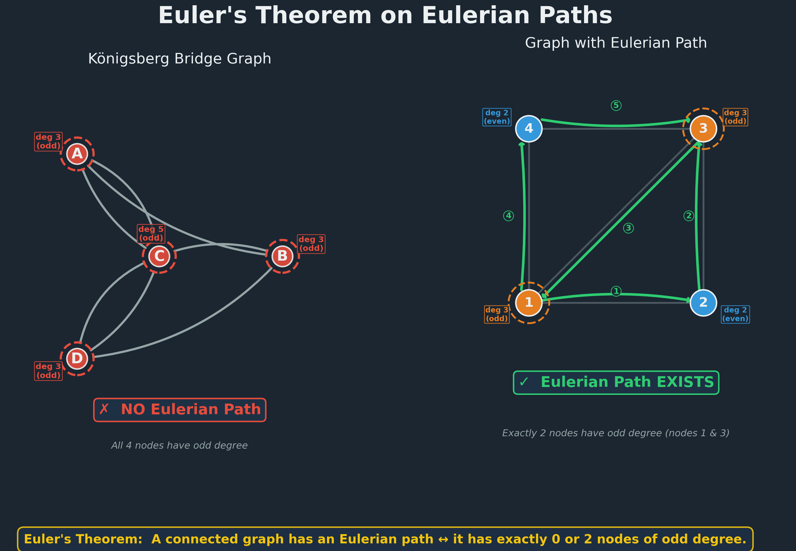
Konigsberg has 4 odd-degree vertices. Need 0 or 2. Impossible.
Euler proved that you can only traverse every edge exactly once if the graph
has zero or two vertices of odd degree. Zero odd vertices means you can start
anywhere and return to your start. Two odd vertices means you must start at
one and end at the other. Konigsberg has four odd-degree vertices —
so no Eulerian path exists. The Sunday stroll is impossible, and now we know
why. Mathematics gave us certainty where trial-and-error could not.
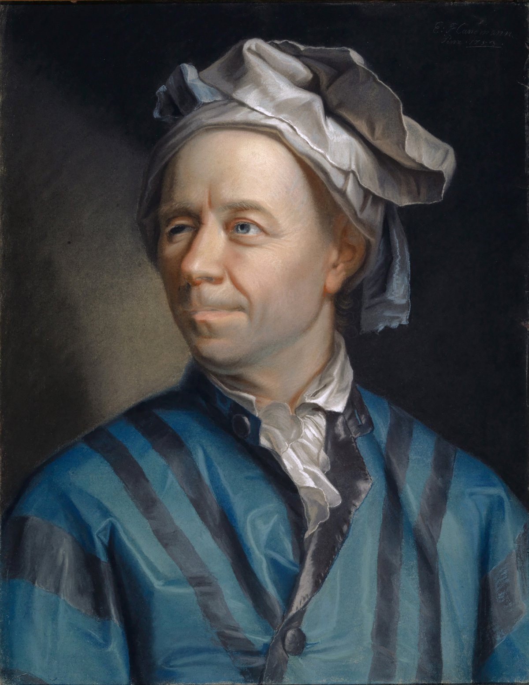
Leonhard Euler (1707–1783)
"This solution bore little relationship to mathematics… yet I do not
know why you are not satisfied with it."
— Leonhard Euler, 1736
Euler didn't just solve a puzzle. He invented a new way of thinking about structure.
Even Euler was unsure whether this counted as "real" mathematics. It did not
use calculus or algebra in the traditional sense. He had invented something
entirely new: the study of position and connection, independent of
measurement. This qualitative approach — caring about structure, not
size — would eventually become one of the most important tools in
all of science and engineering.
Cayley's Trees (1857)
Discovery
How many different tree-shaped graphs can you make with $n$ labeled nodes?
Arthur Cayley (1821–1895)
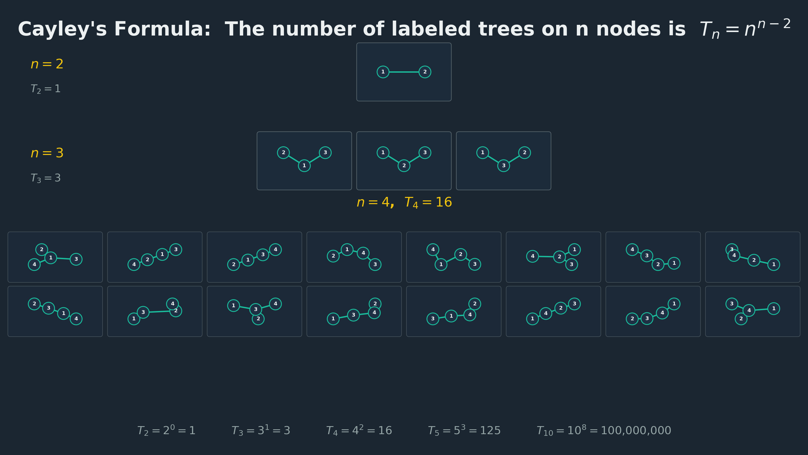
All 16 labeled trees on 4 nodes
A century later, Arthur Cayley asked a counting question. A tree is a
connected graph with no cycles — the simplest kind of network. If
you label each node (give them names), how many distinct trees can you
build? For 3 nodes, the answer is 3. For 4 nodes, it is 16. The pattern
is not immediately obvious.
Cayley's Formula
Number of Labeled Trees
$$T_n = n^{n-2}$$
↓ Press down for proof sketch
Cayley's formula: the number of labeled trees on n nodes is n to the power
n minus 2. Elegant, surprising, and exact. Just 3 nodes give 3 trees. But
10 nodes give 100 million. The combinatorial explosion is dramatic. If you
are curious about how to prove this, press the down arrow for a bonus
sketch using Prufer sequences.
Proof Sketch: Prufer Sequences
A Prufer sequence is a bijection between labeled trees on $n$ nodes and sequences of length $n-2$ drawn from $\{1, 2, \ldots, n\}$.
Repeatedly remove the leaf with the smallest label; record the label of its neighbor.
This yields a sequence of $n - 2$ numbers, each in $\{1, \ldots, n\}$.
The map is reversible: every sequence corresponds to exactly one tree.
There are $n^{n-2}$ such sequences → $T_n = n^{n-2}$. ✓
The proof uses a clever encoding. You peel off leaves one at a time, always
choosing the smallest, and record the neighbor. This gives a sequence of
length n minus 2, and every possible sequence maps back to a unique tree.
Since each element can be any of n labels, the total is n to the n minus 2.
Beautiful, constructive, and completely elementary.
Trees in Computer Science
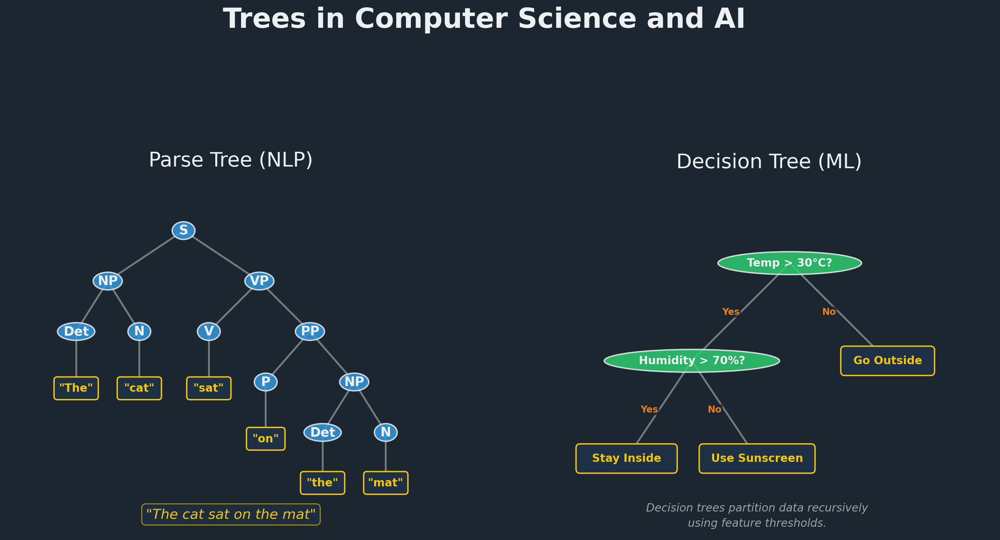
Parse tree: how a compiler reads your code
Parse Trees
Compilers break code into tree structures to understand syntax.
Decision Trees
ML models that split data by asking yes/no questions at each node.
File Systems
Your folders and files form a tree rooted at / or C:\.
Trees are everywhere in computer science. When a compiler reads your Python
code, it builds a parse tree. Machine learning uses decision trees to classify
data. Your file system is a tree. Even HTML is a tree — the DOM.
Cayley's abstract counting problem from 1857 turns out to describe structures
we use every single day.
Erdos & Renyi (1959)
Breakthrough
What happens when you randomly connect nodes?
Paul Erdős (1913–1996)
The Most Prolific Mathematician
1,500+ papers , 500+ collaborators.
He had no permanent home — just a suitcase and a
desire to do mathematics everywhere.
With Alfred Renyi, he asked: if we connect $n$ nodes randomly, each edge appearing with probability $p$, what structure emerges?
Paul Erdos was the most prolific mathematician who ever lived. He wrote
over 1,500 papers with more than 500 co-authors. He lived out of a
suitcase, traveling from university to university. With Alfred Renyi, he
posed a deceptively simple question: start with n isolated nodes; connect
each pair with probability p. What happens?
Phase Transition
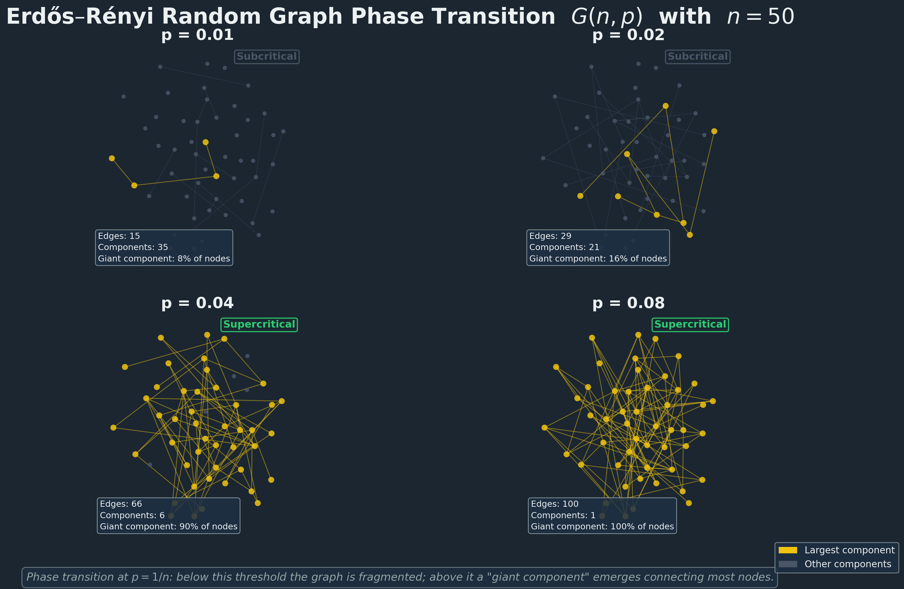
Sparse: isolated clusters
Critical: giant component forms
Dense: almost everything connected
Watch what happens as we add more random edges. At first, you get isolated
pairs and tiny clusters. Then, at a critical threshold — when the
average degree reaches 1 — something dramatic happens. Suddenly, a
giant connected component appears, linking most of the graph. This is a
phase transition, like water turning to ice. It happens abruptly, not
gradually. The fourth panel shows a nearly complete graph.
Emergence: Graphs → AI
AI Connection
Random Graphs
At a critical edge density, structure suddenly appears.
Small change in $p$ → qualitative leap.
Large Language Models
At a critical parameter count, new abilities suddenly emerge.
More parameters → reasoning, code, math.
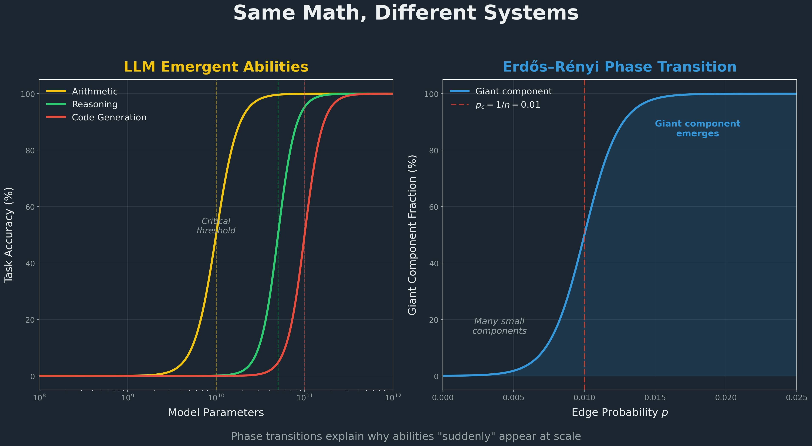
Same math, different systems
Phase transitions in random graphs mirror emergent abilities in LLMs.
This idea of phase transition is exactly what we see in large language models.
GPT-2 could not do arithmetic. GPT-3, with more parameters, suddenly could.
Chain-of-thought reasoning, code generation — these abilities emerge
abruptly past a critical scale, just like the giant component in a random
graph. The mathematics of emergence applies across domains.
Act I Recap: Foundations
1736
Euler
Turned a bridge puzzle into a new branch of mathematics. Connections > things.
1857
Cayley
Counted trees: $T_n = n^{n-2}$. Combinatorics meets graph structure.
1959
Erdos & Renyi
Random graphs undergo phase transitions — structure from chaos.
Three ideas from three centuries. Euler taught us to abstract away
everything except connections. Cayley showed us the combinatorial richness
hiding in trees. Erdos and Renyi revealed that random connections can
produce sudden, dramatic structure. These foundations support everything
that comes next.
Act II
The World Is a Graph
Small worlds, big data, and a company worth trillions
We jump to 1998 and the real world. The internet is a graph. Social networks
are graphs. The question becomes: what can graph theory tell us about the
world we actually live in?
Six Degrees of Separation
How many people separate you from any other person on Earth?
~6
Stanley Milgram's letter experiment, 1967
In 1967, Stanley Milgram ran a famous experiment. He asked people in Nebraska
to get a letter to a target person in Boston by passing it only to someone
they knew personally. On average, it took about six steps. Six handoffs to
reach a stranger across the country. The world is smaller than you think.
Small-World Networks (1998)
Breakthrough
Small-world property: High clustering (friends of friends are friends) + short average path length (anyone reachable in few hops).
Watts and Strogatz figured out why six degrees works. In a regular lattice,
everyone knows their neighbors, but the path to distant nodes is long. In a
fully random graph, paths are short but there is no local structure. The
small-world model sits in between: mostly local connections, but a few
random long-range shortcuts. These shortcuts dramatically shrink the
diameter of the network. This is the model that explains social networks,
neural wiring in C. elegans, and power grids.
Small Worlds in AI
AI Connection
Skip connections in ResNets and Transformers create small-world shortcuts.
Without Skip Connections
Information must travel through every layer sequentially. Gradients vanish over long paths.
Like a regular lattice — long path length.
With Skip Connections
Information can jump across layers. Gradients flow freely.
Like a small-world network — short paths!
This exact same principle appears in modern neural networks. ResNets, which
won ImageNet in 2015, added skip connections — shortcuts that let
information jump over layers. Without them, deep networks could not train.
With them, you get the small-world property: high local structure plus short
global paths. Transformers do this too: the attention mechanism lets any
token directly connect to any other, creating the ultimate shortcut.
Interactive: Six Degrees Path Tracer
Click nodes to trace a path from You to Celebrity . How few steps can you find?
Let's try this ourselves. Starting from "You," click on connected nodes to
trace a path to "Celebrity." Try to find the shortest route. You can only
click nodes that are directly connected to your current position. When you
are done, click "Show Shortest" to see the optimal path. Notice how few
hops it takes even in this small network.
PageRank: Google's Graph
Breakthrough
1998: Two Stanford students turned the entire internet into a graph —
and created a trillion-dollar company .
Larry Page
Larry Page and Sergey Brin realized that the web is a
directed graph: pages are nodes, hyperlinks are edges. The question was not
"what does this page say?" but "who links to it, and how important are they?"
Larry Page and Sergey Brin had a simple but powerful insight: the web is a
graph. Every page is a node. Every hyperlink is a directed edge. And if you
could figure out which nodes were "important" in this graph, you could
build a better search engine. That idea became PageRank, and PageRank
became Google.
How PageRank Works
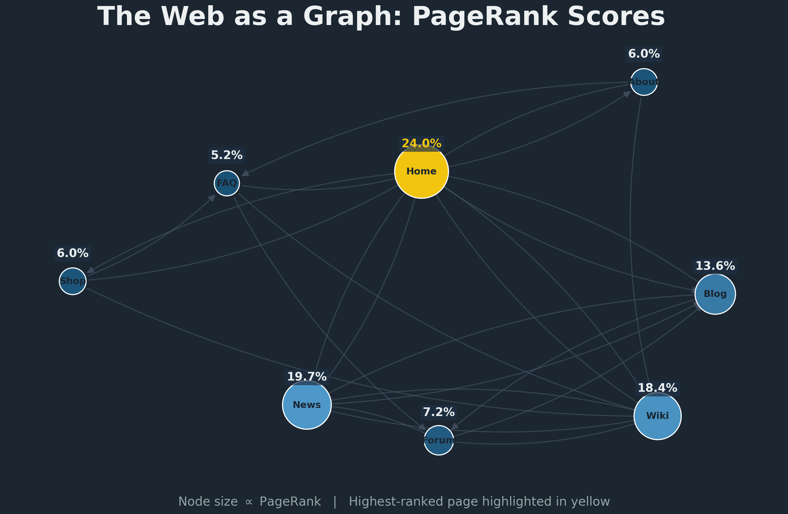
Pages = Nodes
Every web page is a vertex in a giant directed graph.
Links = Votes
A link from page A to page B is a "vote" for B's importance.
Recursive Importance
A page is important if important pages link to it.
Random Surfer
Imagine clicking links at random. Where do you end up most often?
PageRank is elegantly recursive. A page is important if important pages link
to it. That sounds circular, but linear algebra resolves the circularity.
Think of it as a random surfer clicking links forever. The pages you visit
most often have the highest PageRank. The random surfer occasionally
teleports to a random page to avoid getting stuck in dead ends.
The PageRank Formula
PageRank Equation
$$PR(p) = \frac{1-d}{N} + d \sum_{q \in B_p} \frac{PR(q)}{L(q)}$$
$\frac{1-d}{N}$
Teleportation: with probability $1-d$, jump to a random page.
$d \sum \frac{PR(q)}{L(q)}$
Link-following: with probability $d$, follow a random outgoing link.
↓ Press down for the Markov chain interpretation
Here is the formula. Don't memorize it — understand it. The first
term is teleportation: with probability 1 minus d (usually d is 0.85),
the surfer jumps to any random page. The second term is link-following:
with probability d, the surfer follows a random link from the current page.
PR(q) divided by L(q) means each page distributes its rank equally among
its outgoing links.
PageRank as a Markov Chain
The random surfer defines a Markov chain on the web graph.
Transition matrix $M$: $M_{ij} = d/L(j)$ if $j \to i$, plus $\frac{1-d}{N}$ everywhere.
PageRank vector $\vec{r}$ satisfies $\vec{r} = M\vec{r}$ — it is the dominant eigenvector .
Compute by iterating: start with uniform $\vec{r}$, multiply by $M$, repeat until convergence.
The Perron–Frobenius theorem guarantees convergence.
Google's original algorithm did roughly 50–100 iterations over the entire web graph.
PageRank computes the dominant eigenvector of the web's transition matrix.
The Perron-Frobenius theorem guarantees that a unique stationary
distribution exists because the teleportation term makes the matrix
irreducible and aperiodic. Google's original implementation ran about
50 to 100 power iterations on a matrix with billions of entries.
Interactive: Rank by PageRank
Drag the node chips into ranking slots. Who has the most incoming links from important pages?
Based on who links to whom in this small directed graph, rank the five nodes
from highest PageRank to lowest. Look at the arrows: which node receives
the most links from important nodes? Drag the chips into the slots, then
click "Check Answer" to see the true values. Node C should rank highest
because it receives links from almost every other node.
PageRank → Modern AI
AI Connection
PageRank uses the same linear algebra as word embeddings.
Both compute eigenvectors of a matrix built from a graph.
PageRank ranks web pages; Word2Vec positions words in meaning-space.
PageRank computes an eigenvector of the web's adjacency matrix. Word2Vec
computes eigenvectors of the word co-occurrence matrix — which is
really a graph where words are nodes and co-occurrence frequencies are edge
weights. The math is the same: find the dominant directions in a matrix
derived from a graph. This is why linear algebra is the language of AI.
Social Networks Are Graphs
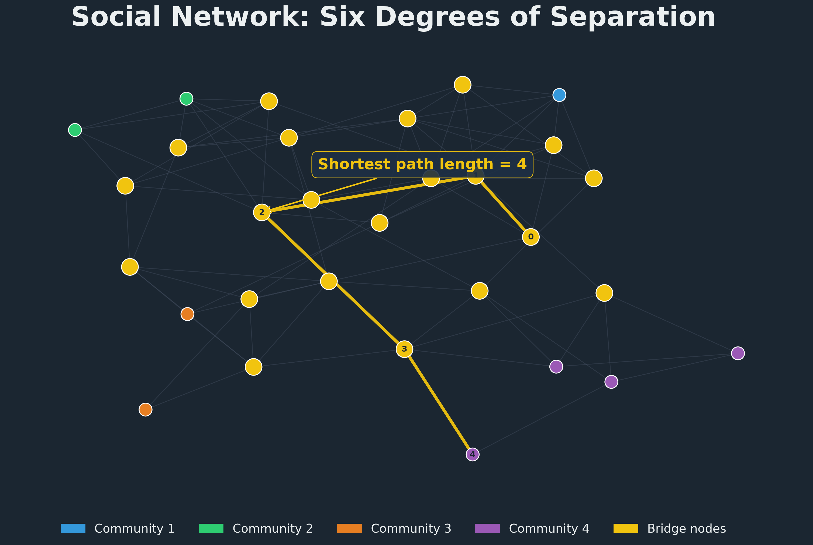
Every social media platform runs graph algorithms at scale:
Friend recommendations — triangle closureInfluence scoring — centrality measuresCommunity detection — graph clusteringViral spread prediction — diffusion on networks
Facebook's social graph: 3+ billion nodes, hundreds of billions of edges.
Every social media platform runs graph algorithms at massive scale. Friend
recommendations use triangle closure: if A knows B and B knows C, suggest A
and C connect. Influence scoring uses centrality measures like PageRank.
Community detection partitions the graph into clusters. Viral spread models
treat information like a disease diffusing through the network. Facebook's
social graph alone has over 3 billion nodes.
Act II Recap: The Real World
1998
Small Worlds
High clustering + short paths. Why six degrees works.
1998
PageRank
Eigenvectors of the web graph. A trillion-dollar algorithm.
2004+
Social Networks
Billions of nodes, graph algorithms at planetary scale.
Act II showed that the real world runs on graphs. Small-world theory
explains why we are all so closely connected. PageRank turned that insight
into the most successful search engine in history. And social networks
showed that graph theory operates at a scale Euler could never have
imagined.
Act III
Intelligence Is a Graph
How graph theory became the architecture of AI
Now for the final act. Every neural network IS a graph. Every transformer
IS a graph algorithm. Graph theory is not just useful to AI — it is
the mathematical language in which AI is written.
Neural Networks Are Graphs
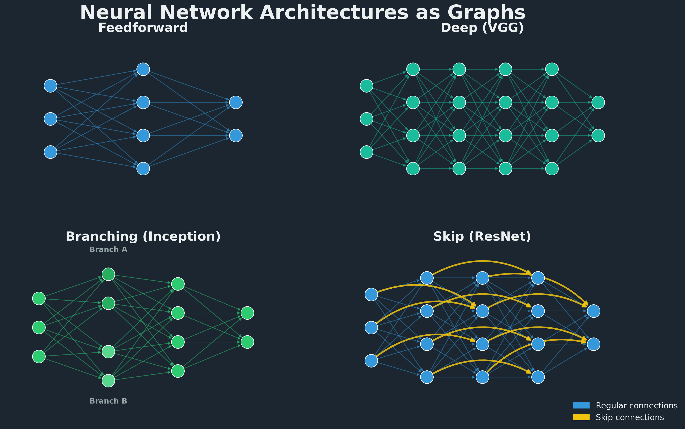
Every neural network is a directed graph : neurons are nodes, weights are edges.
The architecture revolution (2012–2017): from chains to grids to complete graphs.
Look at these four architectures. A feedforward network is a chain of
layers. A CNN adds local grid connections. A recurrent network adds cycles.
And a transformer is essentially a complete graph where every token connects
to every other. The entire history of deep learning is a story about
choosing different graph topologies for the computation.
The Transformer: A Complete Graph
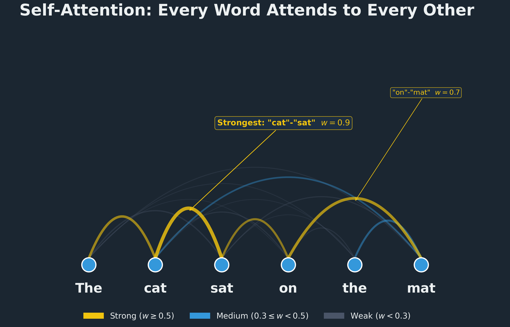
Every token attends to every other token.
The attention matrix is the adjacency matrix of a complete directed graph.
The transformer, the architecture behind GPT, BERT, and every modern
language model, is a complete graph. Every token in the input sequence
computes an attention weight to every other token. The attention matrix is
literally the weighted adjacency matrix of a complete directed graph.
This is why transformers are so powerful — and so computationally
expensive.
Watch: Attention in Action
This 2.5-minute clip from 3Blue1Brown animates exactly what we just described:
the attention mechanism forming a complete graph between tokens. Watch how the
Q and K vectors produce dot products that become the adjacency matrix.
After this clip, we will break down the formula step by step.
Attention = Graph Theory
Scaled Dot-Product Attention
$$\text{Attention}(Q, K, V) = \text{softmax}\!\left(\frac{QK^T}{\sqrt{d_k}}\right) V$$
$QK^T$
= adjacency matrix
Edge weights between all token pairs.
softmax
= normalize edges
Turn raw scores into a probability distribution.
$\times V$
= message passing
Aggregate neighbor information along edges.
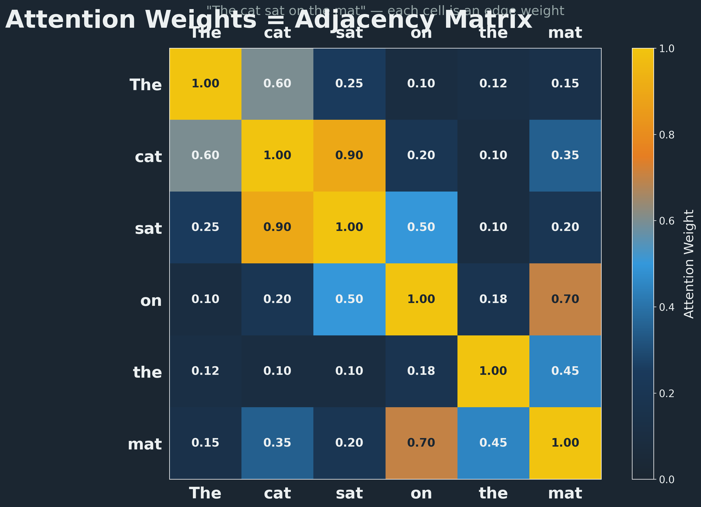
Attention weights = edge weights in the token graph
↓ Press down for complexity analysis
If you look at attention through a graph theory lens, each component has
a clear role. Q times K-transpose computes a pairwise similarity matrix
— the adjacency matrix. Softmax normalizes each row so the edge
weights sum to 1. Multiplying by V is message passing: each node
aggregates information from its neighbors, weighted by attention.
This is exactly the framework of graph neural networks.
Attention Complexity: $O(n^2)$
Because every token attends to every other token, attention is quadratic in sequence length.
Sequence Length Attention Operations Analogy
512 tokens 262,144 A short email 4,096 tokens 16.8 million A long article 100,000 tokens 10 billion A novel
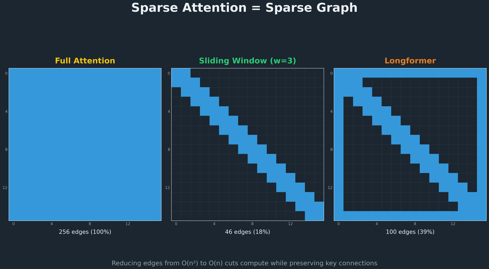
Full attention (complete graph) vs. sparse patterns (sparse graphs)
This is why researchers are developing sparse attention patterns — replacing the complete graph with a sparser one.
The quadratic cost is the transformer's Achilles heel. For 512 tokens,
attention computes about 260,000 operations — fine. But for
100,000 tokens, it's 10 billion. This is why context windows were
historically limited, and why researchers develop sparse attention
mechanisms that replace the complete graph with a carefully chosen
sparse graph.
Multi-Head Attention: Parallel Graphs
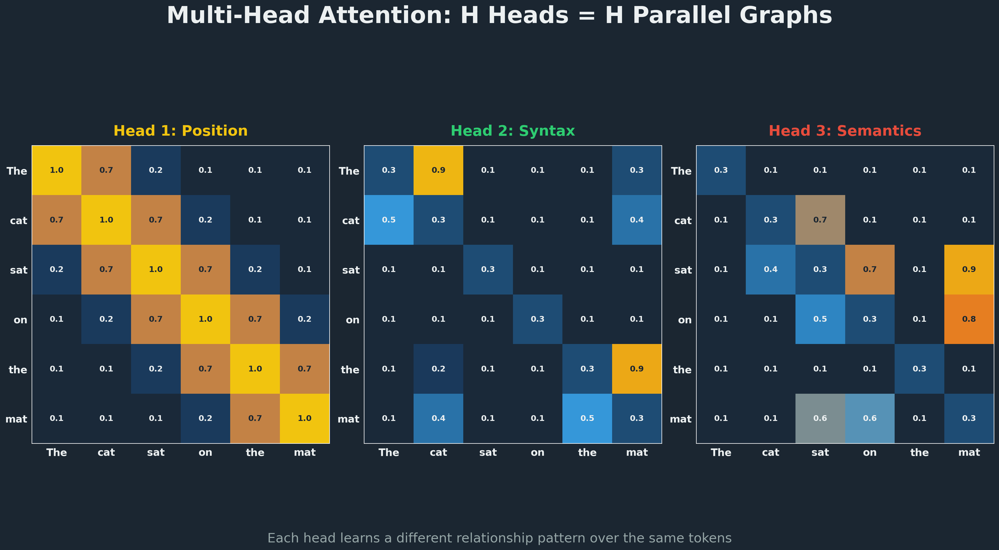
Each head discovers different connections — H heads = H parallel graphs
Each attention head learns to focus on different relationships. Head 1 might
capture positional patterns (adjacent words). Head 2 captures syntax
(articles and their nouns). Head 3 captures semantics (verbs and their objects).
Multi-head attention runs H parallel graphs on the same set of tokens.
Knowledge Graphs
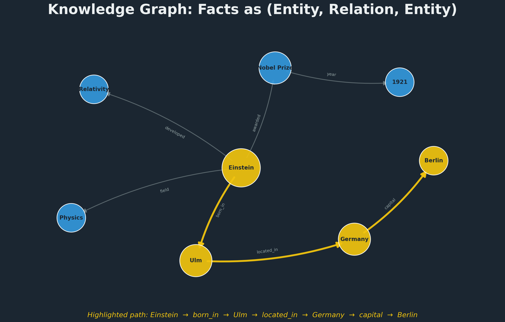
Knowledge graphs represent facts as triples :
Google Knowledge Graph: 500+ billion facts, 5+ billion entities.
Knowledge graphs store facts as triples: subject, predicate, object. Each
entity is a node, each relationship is a labeled edge. Google's Knowledge
Graph powers those information boxes you see in search results. Wikidata,
DBpedia, and enterprise knowledge graphs all use this format. The graph
structure makes it easy to answer multi-hop questions: "Where was the
developer of relativity born?"
RAG: Giving AI a Memory
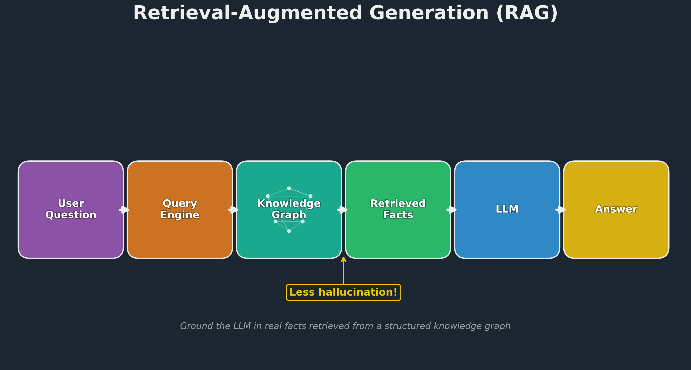
Query
User asks a question.
Retrieve
Search a knowledge base for relevant documents/facts.
Generate
Feed retrieved context + question into the LLM.
Result: less hallucination , more factual answers.
RAG — Retrieval-Augmented Generation — is the most popular
technique for making AI factually accurate. Instead of relying solely on
what the model memorized during training, RAG retrieves relevant documents
at query time and feeds them into the prompt. The retrieval step is often
a graph search: traverse a knowledge graph or a vector-indexed document
graph to find the most relevant context.
GraphRAG: The Cutting Edge
Microsoft's GraphRAG (2024) uses community detection on knowledge graphs to answer complex questions.
Traditional RAG
Retrieves individual text chunks. Works for factoid questions.
Struggles with "big picture" queries.
GraphRAG
Builds a knowledge graph from text. Detects communities. Summarizes at multiple scales.
Answers thematic, synthesis questions.
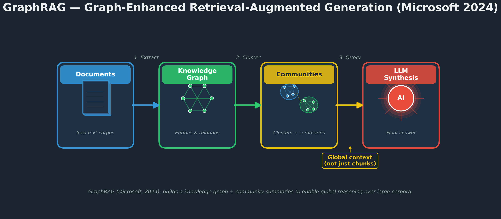
Community detection (Louvain, Leiden) is the same graph algorithm used for social network analysis.
The latest development is GraphRAG by Microsoft Research, published in 2024.
Traditional RAG retrieves text chunks — it works well for specific
factual questions but fails on broad thematic queries. GraphRAG first
extracts entities and relationships to build a knowledge graph, then runs
community detection algorithms to identify clusters of related concepts,
and finally summarizes each community. The same Louvain algorithm used to
find friend groups on Facebook now helps AI understand the big picture in
a corpus of documents.
Graph Neural Networks (GNNs)
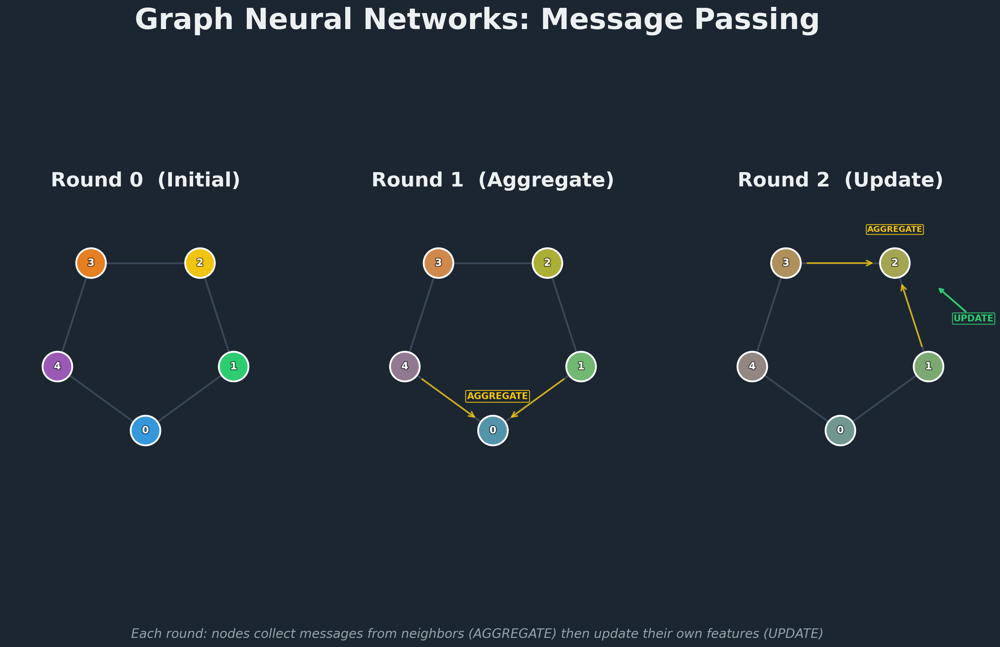
GNNs: Neural networks that learn directly on graph-structured data.
Message Passing
Each node collects messages from its neighbors.
Messages are aggregated (sum, mean, max).
Node updates its representation.
Repeat for $L$ rounds — information flows $L$ hops.
Graph Neural Networks generalize the transformer idea to arbitrary graph
structures. Instead of a complete graph of tokens, GNNs work on whatever
graph you give them — social networks, molecules, road maps. The
mechanism is message passing: each node gathers information from its
neighbors, aggregates it, and updates itself. After L rounds, each node
knows about its L-hop neighborhood. This is strikingly similar to
attention in transformers.
The GNN Formula
Message Passing Update Rule
$$h_v^{(l+1)} = \text{UPDATE}\!\left(h_v^{(l)},\; \text{AGGREGATE}\!\left(\{h_u^{(l)} : u \in \mathcal{N}(v)\}\right)\right)$$
AGGREGATE
Collect neighbor features: sum, mean, or attention-weighted.
UPDATE
Combine own features with aggregated message. Apply a neural network.
↓ Press down for expressiveness theory
The GNN formula is deceptively simple. For each node v, gather the
feature vectors of all neighbors, aggregate them, then combine with the
node's own features and pass through a neural network. This one equation
covers GCN, GraphSAGE, GAT, and most other GNN variants — they
differ only in how they implement AGGREGATE and UPDATE.
GNN Expressiveness & the WL Test
How powerful are GNNs? They are at most as powerful as the Weisfeiler-Leman (WL) graph isomorphism test .
The 1-WL test iteratively refines node colors based on neighbor colors.
Standard message-passing GNNs are exactly as expressive as 1-WL (Xu et al., 2019).
Some graph pairs (e.g., non-isomorphic regular graphs) cannot be distinguished by 1-WL.
Higher-order GNNs (k-WL) trade expressiveness for computational cost.
Understanding these limits guides the design of more powerful architectures.
Xu et al. proved in 2019 that standard message-passing GNNs are exactly
as powerful as the 1-dimensional Weisfeiler-Leman test. This means there
are pairs of non-isomorphic graphs that no standard GNN can distinguish.
For example, certain regular graphs look the same to 1-WL. Higher-order
GNNs can overcome this, but they are more expensive. This theoretical
result guides architecture design.
Drug Discovery with GNNs
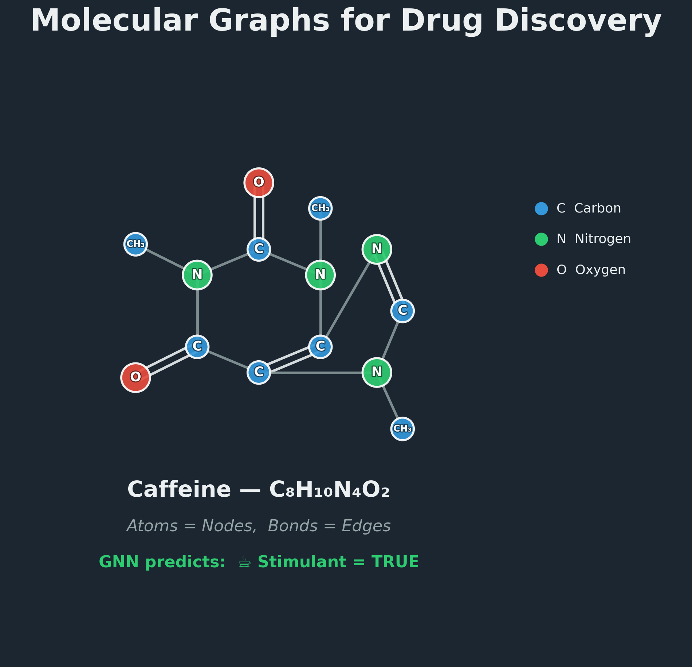
Molecules are graphs:
Atoms = nodesBonds = edgesBond types = edge labels (single, double, aromatic)
Why GNNs Excel
GNNs predict molecular properties (toxicity, binding affinity, solubility) directly
from the molecular graph — no hand-crafted features needed.
Drug discovery is one of the most exciting applications of graph neural
networks. A molecule is naturally a graph: atoms are nodes, bonds are edges.
Traditional approaches required chemists to hand-design molecular features.
GNNs learn directly from the graph structure, predicting properties like
toxicity, drug-target binding affinity, and solubility. This has accelerated
drug design pipelines from years to months.
Interactive: Design a Neural Network
Click two nodes to add/remove an edge. Then Analyze your architecture.
You have input, hidden, and output nodes. Click any two nodes to draw an
edge between them; click again to remove it. Try different patterns: connect
only adjacent layers for a feedforward network, add skip connections for a
ResNet, or connect everything for a transformer-like architecture. Click
"Analyze" to see the density, whether you have skip connections, and how
your design is classified. Click "Random" for a random wiring.
Transformers vs. GNNs
Property
Transformer GNN
Graph type
Complete graph
Sparse / custom graph
Complexity
$O(n^2)$
$O(|\mathcal{E}|)$ — edges only
Best for
Language, vision, audio
Molecules, networks, maps
Data assumption
Sequence / grid
Arbitrary graph
Edge weights
Learned (attention)
Given or learned
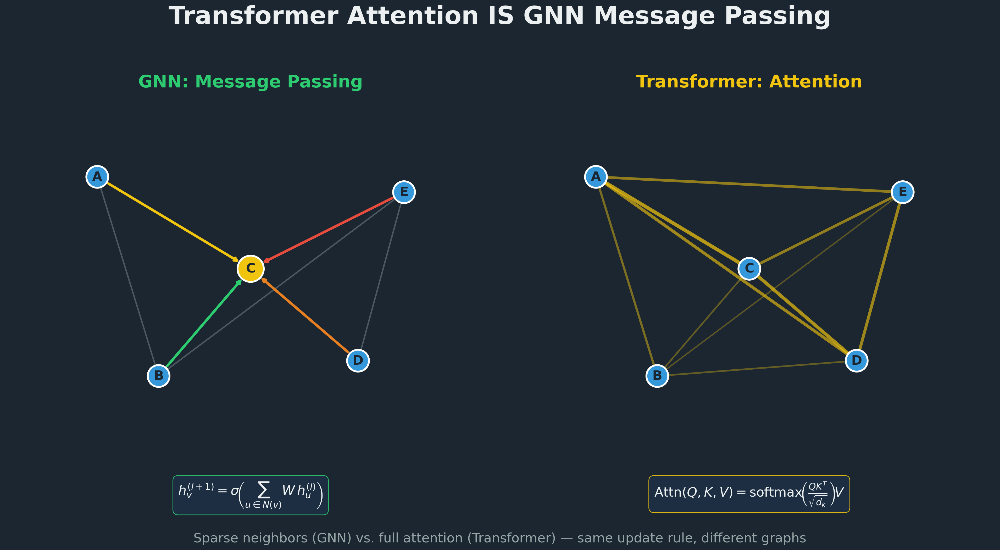
Both architectures: message passing along graph edges
Both are message-passing on graphs — they differ in which graph they use.
Which is better? Neither — they serve different purposes. The
transformer builds a complete graph, which means every token can attend to
every other. This is powerful but quadratic. GNNs use the graph you give
them, which can be sparse, saving computation but requiring you to know the
structure in advance. Transformers dominate language and vision; GNNs
dominate molecules, social networks, and knowledge graphs. But at their
core, both are doing the same thing: message passing on a graph.
The Unifying Insight
Every AI architecture is a choice of graph topology .
Feedforward
= chain graph
CNN
= grid / lattice graph
Transformer
= complete graph
GNN
= custom / data graph
Mixture of Experts
= sparse bipartite graph
When researchers design a new architecture, what they are really doing is
choosing a graph topology. A feedforward net is a chain. A CNN is a grid.
A transformer is a complete graph. An RNN is a chain with backward edges.
A GNN uses whatever graph the data provides. And Mixture of Experts, used
in models like GPT-4, is a sparse bipartite graph where tokens are routed
to a subset of expert subnetworks. Graph theory is the unifying language.
The 300-Year Chain
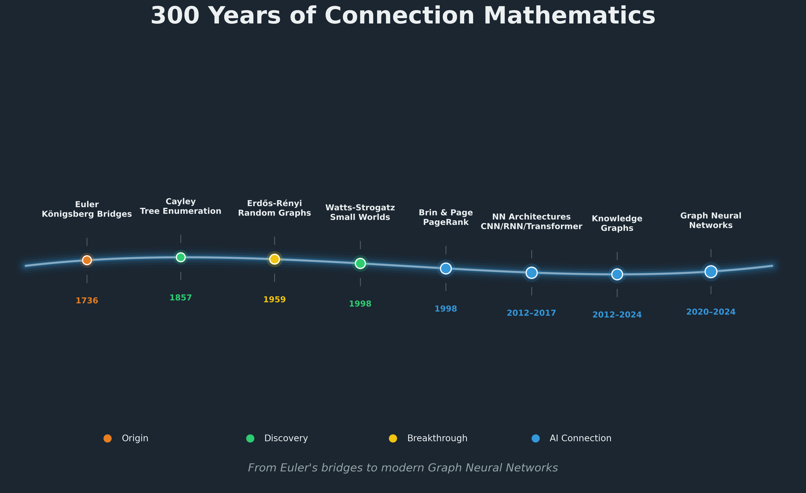
1736 Euler1857 Cayley1959 Erdos-Renyi
1967 Milgram1998 Watts-Strogatz1998 Page-Brin
2012 Deep Learning2017 Transformers2020s GNNs & GraphRAG
300 years, one idea. Euler abstracted bridges into a graph. Cayley counted
trees. Erdos showed random graphs have phase transitions. Milgram proved
we live in a small world. Page and Brin ranked the web. And today,
transformers and GNNs are built on the same foundation: nodes, edges,
and the information flowing between them. Each discovery built directly
on the ones before it.
"What matters is not the things —
This is the founding insight of graph theory.
I want to leave you with this idea. Euler realized in 1736 that the shape
of the landmasses did not matter — only the bridges between them.
Today, neural networks learn by adjusting the weights on edges, not by
changing the neurons themselves. Intelligence, both biological and
artificial, lives in the connections. That is the deepest lesson of graph
theory.
What Comes Next
Graph theory is one of the most in-demand skills in tech. Where can it take you?
AI / Machine Learning Engineer
Data Scientist
Computational Biologist
Social Network Analyst
Cybersecurity Specialist
Drug Discovery Researcher
Financial Network Analyst
Thank you. Questions?
Graph theory is one of the most in-demand skills in the tech industry today.
AI and ML engineers use graph neural networks. Data scientists run network
analysis. Computational biologists model protein interactions as graphs.
Social network analysts detect communities and influence. Cybersecurity
teams model attack graphs. Drug discovery researchers use GNNs to predict
molecular properties. And financial analysts model systemic risk through
network theory. Wherever there are connections, there is graph theory.
Thank you for your attention. I am happy to take questions.
Image Credits
Leonhard Euler portrait: Jakob Emanuel Handmann, 1753 — Public Domain
Arthur Cayley engraving: Wellcome Collection — CC BY 4.0
Paul Erdős photograph: Wikimedia Commons
Larry Page photograph: Wikimedia Commons — CC BY 2.0
Sergey Brin photograph: Wikimedia Commons — CC BY-SA 2.0
Königsberg map: Merian-Erben, 1652 — Public Domain
All generated diagrams: Original work for this lecture
Video: "How the Königsberg bridge problem changed mathematics" — TED-Ed (YouTube)
Video: "Attention in transformers, step-by-step" — 3Blue1Brown (YouTube)
Video: "Large Language Models explained briefly" — 3Blue1Brown (YouTube)